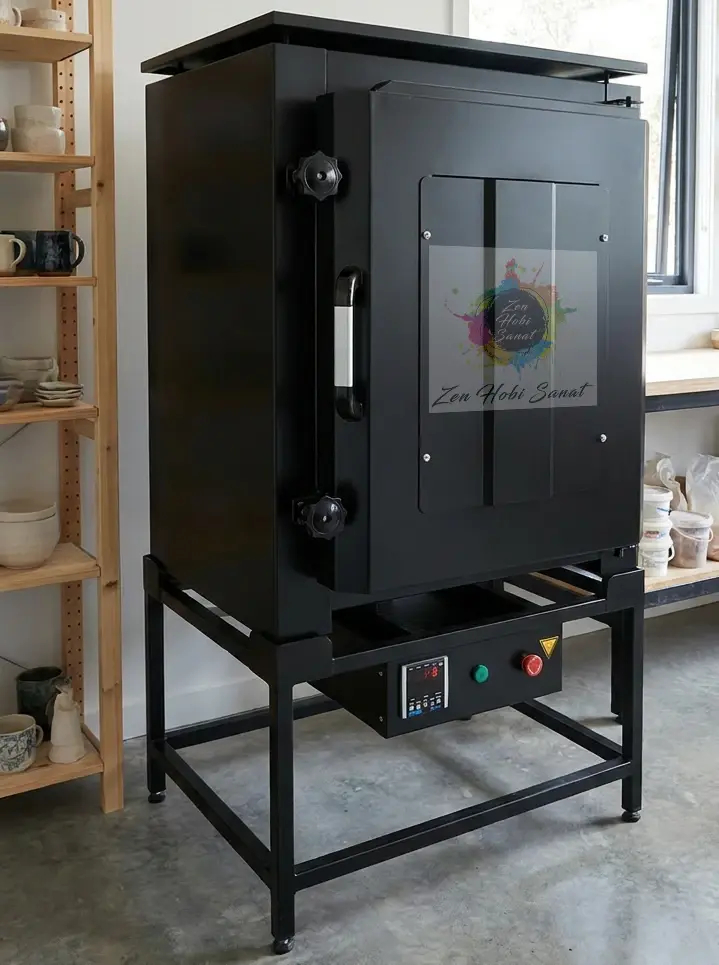

Seramik Fırınlama
Atölyemizde öğrencilerimizin ürettiği her seramik, kendi fırınımızda, 2 kez fırınlanarak hazır hale getirilir.
Çamurdan kalıcı bir esere: fırının içinde neler olur?
Atölyemizde öğrencilerimizin ürettiği tüm eserler, dışarıya çıkmadan, kendi fırınımızda pişiriliyor. Seramik, kurumadan ve ateşle buluşmadan önce kırılgan bir haldedir; kalıcı, suya dayanıklı ve günlük kullanıma uygun hale gelmesi için her parça iki ayrı pişirimden geçer: önce bisküvi fırınlaması, sırlamanın ardından da sır fırınlaması. Bu iki aşamalı süreci, kendi elektrikli fırınımızda sizin için özenle yönetiyoruz.
- Her eser, atölyemizin kendi fırınında pişirilir
- Her seramik toplam 2 kez fırınlanır: bisküvi + sır
- Bisküvi fırınlama: yaklaşık 900–980°C
- Sır fırınlama: yaklaşık 1000–1060°C
- Isınma, bekleme ve yavaş soğuma kontrollü yapılır
- Atölye dışı seramikler için fırın kiralama imkânı
Fırına girmeden eve gelene kadar
Her seramik eser, elinizden çıktıktan sonra kendi fırınımızda toplam 2 kez pişirilerek kalıcı halini alır.
1. Kurutma
Şekillendirilen eser fırına girmeden önce tamamen kurumalı. Nemli bir parça fırında çatlayabileceği için kurutma sabırla, günler içinde tamamlanır.
2. Bisküvi Fırınlama
Kuruyan çamur, yaklaşık 900–980°C'de ilk kez pişirilir. Bu pişirim, çamuru gözenekli ama dayanıklı bir "bisküvi" haline getirir; artık sırlanmaya hazırdır.
3. Sırlama & Sır Fırınlama
Sırlanan parça ikinci kez, genellikle 1000–1060°C'de pişirilir. Sır bu sıcaklıkta cama dönüşüp yüzeyi parlak, su geçirmez ve renkli hale getirir.

Kendi seramiğiniz mi var? Fırınımızı kiralayın
Atölyemize gelmeden, başka bir yerde ya da evinizde şekillendirdiğiniz seramik ürünleriniz için de fırınımızı kiralayabilirsiniz. Bisküvi ve sır fırınlaması dahil, aynı özenli süreci atölye öğrencisi olmadan da kullanabilirsiniz.
- Atölye dışında ürettiğiniz seramikler kabul edilir
- Bisküvi ve/veya sır fırınlama seçenekleri
- Ebat ve adete göre fırın hacmi planlanır
- Uygunluk ve ücret bilgisi için önceden iletişime geçin
Merak ettikleriniz
Fırının ısınması, pişirimi ve özellikle güvenlik için gereken yavaş soğuması saatler alır; fırın tam soğumadan açılmaz. Kurutmadan sırlı fırınlamaya kadar tüm süreç genelde 2–3 hafta sürer, sonrasında eseriniz teslime hazır olur.
Fırın kiralamalarda, fırınlatmak için getirdiğiniz ürünleri 3 gün sonra geri teslim alabilirsiniz.
Evet. Atölyemizde üretilen her eser önce bisküvi fırınlamasından, sırlandıktan sonra da sır fırınlamasından geçer — toplam 2 pişirim. Her iki aşama da kendi fırınımızda, dışarıya çıkmadan tamamlanır.
Bisküvi fırınlaması yaklaşık 900–980°C, sır fırınlaması ise yaklaşık 1000–1060°C civarında yapılır. Sıcaklık, kullanılan çamur ve sır türüne göre ayarlanır.
Hayır. Seramik atölyesi kapsamında ürettiğiniz eserlerin bisküvi ve sır fırınlaması sürece dahildir; ayrıca bir ödeme yapmanız gerekmez.
Evet. Başka bir yerde ürettiğiniz seramik parçalar için de fırınımızı kiralayabilirsiniz. Ebat, adet ve uygun tarih için önceden WhatsApp'tan bize ulaşmanız yeterli.
Sır fırınından sonra
Fırınlamanın çamura kazandırdığı parlaklık ve dayanıklılıktan bir seçki.
 Yüz figürlü set
Yüz figürlü set Sırlı kupa & tabak
Sırlı kupa & tabak Yüz figürlü set
Yüz figürlü set Desenli vazo
Desenli vazoAtölyeden günlük kareler
Yeni eserler, açılan kontenjanlar ve workshop duyuruları önce Instagram'da. Atölyenin gündelik hâline en yakın yer — gelin, oradan da tanışalım.
Instagram'da Takip Et


Kendi seramiğinizi şekillendirmeye hazır mısınız?
Elinizle şekillendirin, gerisini biz üstlenelim — kurutma, bisküvi ve sır fırınlaması dahil. Kontenjan sınırlı; gün ve saatinizi şimdiden ayırtın.